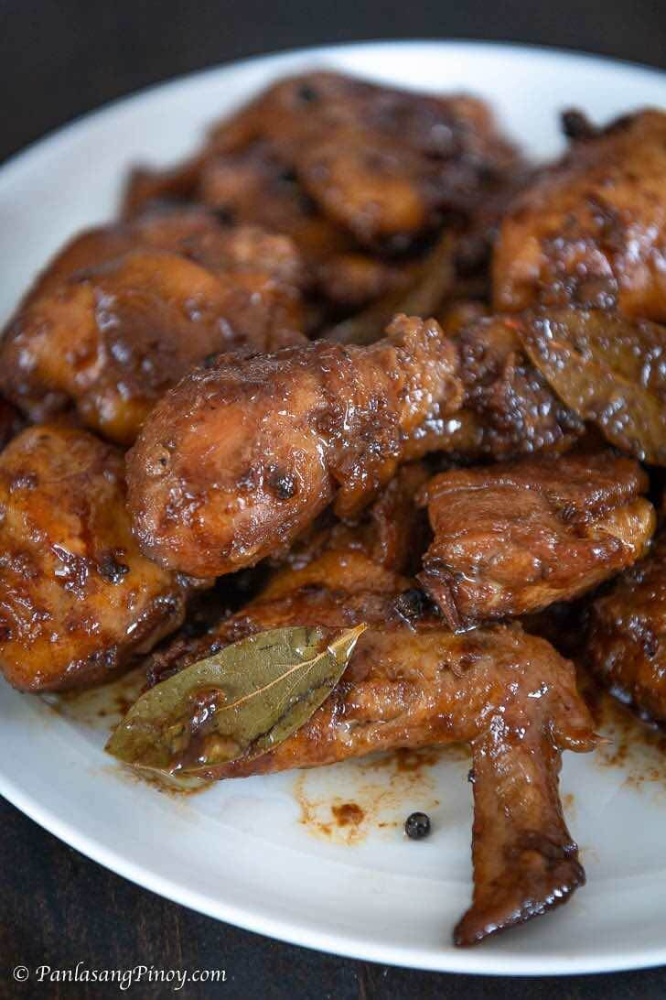

Chicken Adobo

The famous chicken adobo
Chicken Adobo is a type of chicken stew. Chicken pieces are marinated in soy sauce and spices, pan-fried, and stewed until tender.
dish gained popularity because of its delicious taste and ease in preparation.
A dish that is classically and quintessentially Pinoy, chicken adobo is a dish that is beloved by many across the country. While there have been several variations of adobo across the years, chicken adobo remains one of the most popular –– and for good reason!
Ingredients:
- 2 1/2 lb Chicken
- 1 piece Knorr chicken cube>
- 5 pieces Bay Leaves, dried
- 1 head Garlic
- 2 cups Lemon lime soda
- 1/4 cup Soy sauce
- 2 tsp Peppercorn, whole
- 3 tbsp Cooking oil
- 1/2 cup White vinegar
Recipe Instructions
- Saute the Garlic
- Add the Chicken and put salt and pepper to taste
- Add the 1 1/2 cups of Water and bring it to boil
- Add Soy sauce and vinegar and bring to boil again
- Add the Peppercorn nad dried Bay Leaves and bring to boil till the meat tenders
- wait till the juice reduced before serving